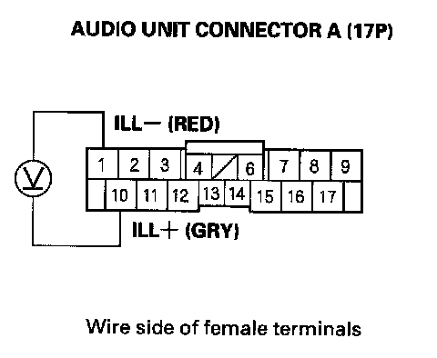

Display Is Blank or Does Not Dim With Dimmer (Without Navigation)
Display is blank or does not dim with dimmer (without navigation)1. Turn the ignition switch ON (II).
2. Turn the combination light switch ON and OFF to see if the symptom can be duplicated.
Is it duplicated?
YES - Go to step 3.
NO - Operation is normal.
3. Turn the combination light switch OFF.
4. Operated the illumination control dial.
Is it normal?
YES - Operation is normal.
NO - Go to step 5.
5. Disconnect and check audio unit connector A (11P) for loose or a poor connection.
Reconnect audio unit connector A (20P) and recheck the symptom; does it still appear?
YES - Go to step 6.
NO - Operation is normal.

6. Measure the voltage between audio unit connector A (17P) No.1 and No. 10 terminals. Operate the dash brightness controller buttons to see if the voltage changes.
Does the voltage change?
YES - Substitute a known-good audio unit, and recheck. If the symptom/indication goes away, replace the original audio unit. If symptom is still present, substitute a known-good center panel display and recheck. If the symptom/indication goes away, replace the original center panel display.
NO - Repair open in the wire between the under-dash fuse/relay box and the gauge control module.